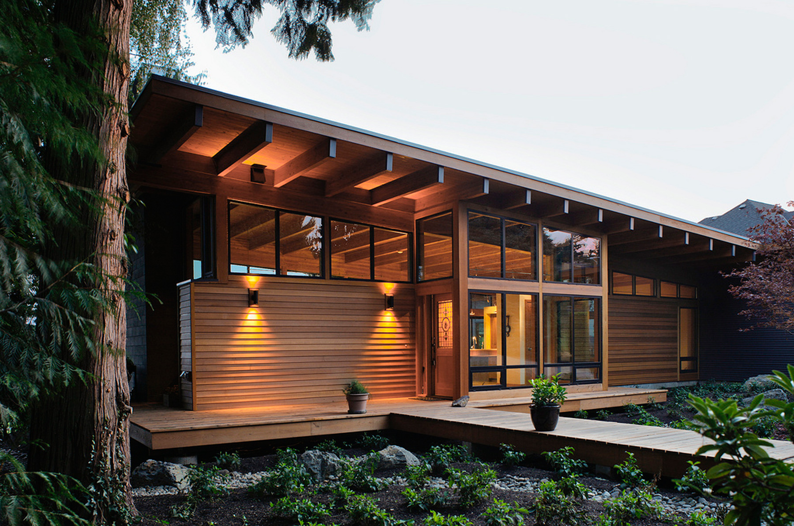
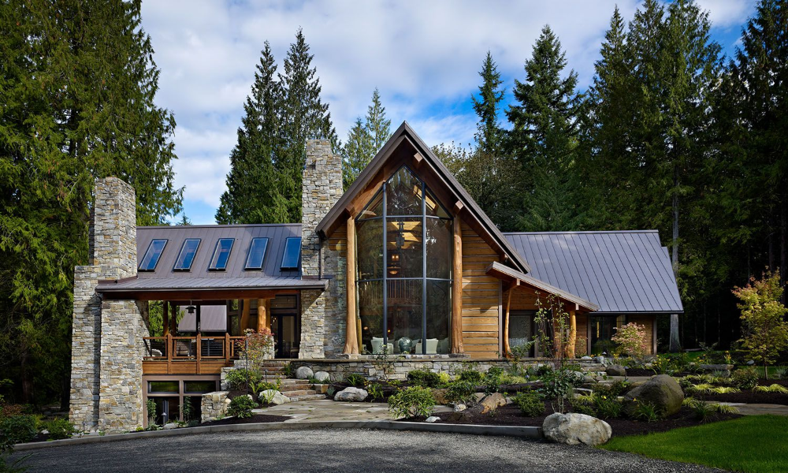

Find your
Prefect Home!


Traditional country houses, with their timeless charm, often showcase regional architectural
styles and materials. For example, English country houses may feature brick or stone with steeply pitched roofs and
dormer windows, while French ones use local stone or stucco and incorporate rustic elegance. Interiors commonly
highlight natural materials like wood and stone, with cozy, vintage-inspired decor. Landscaping typically includes
extensive gardens and practical outbuildings, such as barns or sheds. These homes reflect historical periods and local
resources, blending historical charm with modern adaptations to maintain their allure. The design often includes practical
layouts with large, functional kitchens and spacious living areas, complemented by meticulously landscaped gardens that enhance the home's
connection to its surroundings. Emphasizing comfort and authenticity, bed traditional houses offer a nostalgic glimpse into the past while
providing a welcoming and serene living environment.

A hill house is a type of residence strategically positioned on a hillside to maximize views and natural light while
minimizing environmental impact. Designed to blend seamlessly with the landscape, these homes often feature terraced
levels, large windows, and overhangs to capitalize on panoramic vistas and create a sense of openness. The construction
may incorporate materials like stone or timber, integrating with the natural surroundings and providing stability on
uneven terrain. Interior layouts are typically open and fluid, often with multiple levels that follow the contours of
the hill, and include outdoor spaces like terraces or decks that extend the living area into the landscape. allowing for dynamic
use of space that follows the hill’s contours, while outdoor areas such as balconies and patios extend the living space into the
landscape. This thoughtful design not only maximizes the scenic beauty but also creates a harmonious balance between the home and
its natural surroundings.

Cedar Haven houses are celebrated for their harmonious blend with nature, characterized by the
prominent use of cedar wood in both structural and aesthetic elements. These homes typically feature warm, natural tones
and textures, with cedar siding and shingles that weather gracefully over time. The design often emphasizes open, airy
interiors with large windows that frame picturesque views and invite abundant natural light. Cedar Haven houses are
designed to integrate seamlessly with their surroundings, often set amidst lush landscapes or wooded areas, and
prioritize sustainability and energy efficiency. Their rustic elegance and commitment to blending with nature make
them a tranquil and stylish choice for those seeking a retreat that balances comfort with environmental harmony.
These houses are designed for comfort and tranquility, offering a serene retreat with an emphasis on eco-friendly living
and a deep connection to nature.